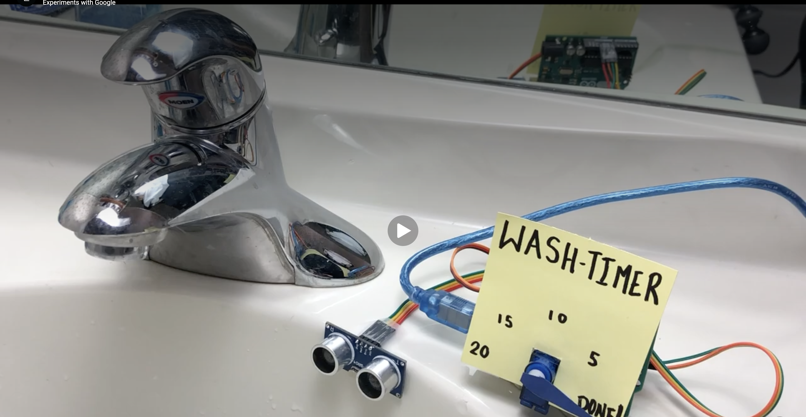

Wash Timer Project

Description: In this project, I made a wash timer using electronic parts and wiring. The picture shows an ultrasonic sensor, jumper wires, a servo motor, and a hand-made display labeled Wash-Timer. The numbers on the display show different timer points, and the servo arm points toward the current stage until it reaches Done. This project connects electronics with a practical idea because it uses sensors and movement to show timing in a clear way.
Reflection: This project is mine, and it helped me understand how different electronic parts can work together as one system. I learned that wiring, sensors, and motors all need to be connected carefully for the project to work properly. Building the wash timer also showed me that electronics can solve everyday problems when the design is simple and easy to understand. If I improved it later, I would make the display cleaner and test the timing more so it could be more accurate.